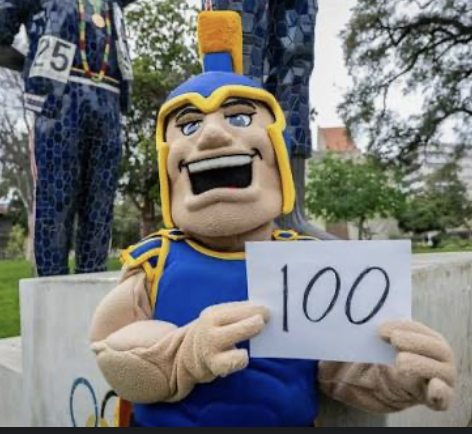

Name
Spartan
Email
spartan.sj@sjsu.com
Address
6767 San Jose State University
San Jose, CA 95112
I am Spartan, the mascot of San Jose State University. When I am not on the sidelines at games, I spend time walking through downtown San Jose, hiking in the hills around campus, and meeting students at events. I like trying new restaurants, following SJSU sports, and showing up wherever Spartans gather. Representing the university in the community is one of the parts of the job I enjoy most.
At San Jose State I study Computer Science and I am currently taking CS 174, Server-side Web Programming. In this course I am learning how HTML and CSS fit together to build pages like this biography. I want to keep building web applications that are useful for students and campus groups. After graduation I hope to work as a software developer and keep supporting the SJSU community through technology.